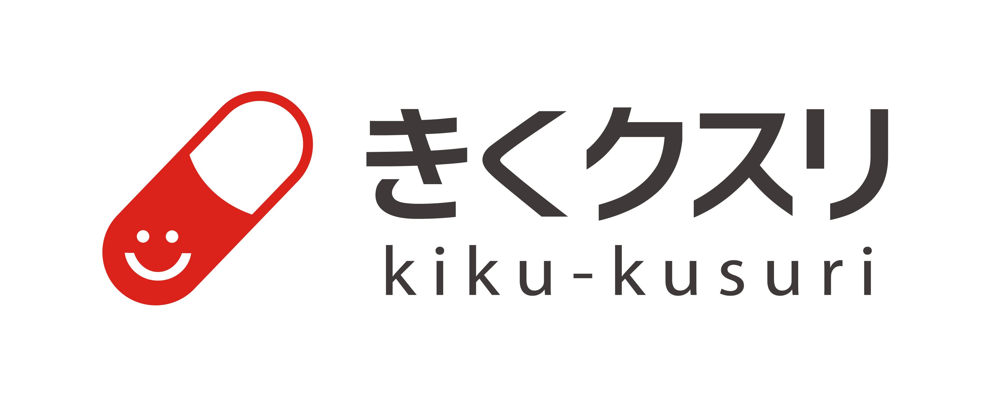
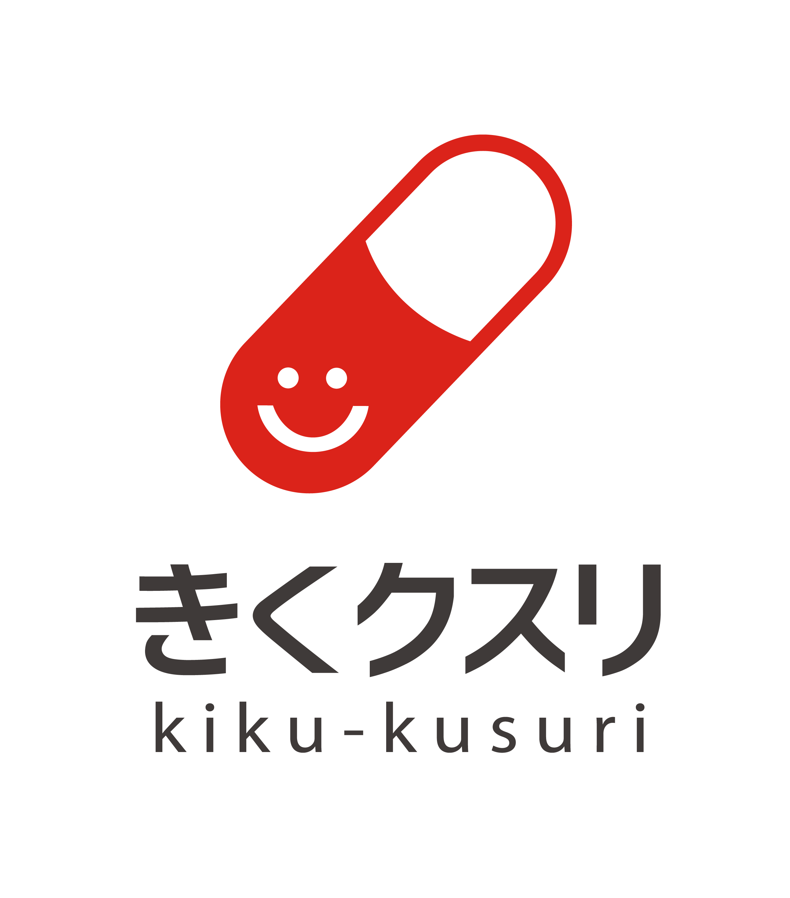

SEMINAR & MANAGEMENT SUPPORT COMPANY
実践的な発見力・分析力
豊富な課題演習で、知識を「使えるチカラ」に変えます。
セミナー×経営支援の両輪
学びを、実際の経営課題の解決まで一貫してサポート。
全国どこからでも受講可能
オンライン開催で、場所を問わず参加いただけます。
ABOUT
「イイハナシダッタナー」で、
終わらせない。
セミナーを受けて満足して終わり——そんな学びでは、会社は変わりません。きくクスリは、財務情報を起点とした問題の発見力・分析力が「実践的な能力」として身につくまで、豊富な課題と反復訓練で伴走します。
BUSINESS
セミナーと経営支援。ふたつの事業を両輪に、学びから実践までを一貫して支えます。
財務・簿記・経営分析・資金繰りをテーマに、全9コースの実践型研修をオンラインで開催。豊富な課題演習で知識の定着を後押しします。
財務顧問、経営計画の策定支援、資金繰り改善など、経営者の良き参謀として伴走。学びを自社の成果へつなげます。
SEMINAR
全9コース ｜ 8月〜11月 ｜ オンライン開催
「お金とは何か」から始める、ビジネスパーソンのためのマネーリテラシー入門。家計と企業会計の共通点を通じて、お金の流れを直感的に理解し、日常業務に活かせる金銭感覚を養います。
財務情報を起点とした問題の発見力・分析力を身につける講座。簿記や財務の基礎を学び、豊富な課題で知識の定着を後押しします。
初級で学んだ簿記・財務の基礎を土台に、財務三表の連動分析や経営指標の読み解き方を深掘りする中級講座。ケーススタディを通じて、自社や取引先の財務状況を的確に評価できる分析力を養います。
経営の意思決定に直結する高度な財務分析講座。企業価値評価、M&A時のデューデリジェンス、中期経営計画への財務戦略の落とし込みなど、CFO視点で数字を経営に活かす実践力を磨きます。
経営者・管理職が押さえるべき会社法の要点を実務目線で学ぶ講座。株主総会・取締役会の運営、機関設計、コンプライアンスなど、意思決定に直結する法務知識を体系的に習得します。
目標設定・進捗管理・部下育成など、管理職に求められるマネジメントスキルを体系的に学ぶ講座。PDCAサイクルの実践や組織運営の基本を演習で身につけ、成果を出せるチームづくりを目指します。
数字で語れるリーダーを育てる実践講座。チームの目標設定から進捗管理、メンバーへのフィードバックまで、財務的視点を軸にした説得力あるリーダーシップの発揮法を学びます。
「決まらない会議」を「成果が出る会議」に変える実践講座。アジェンダ設計、数値データの活用、合意形成のファシリテーション技術を演習中心で鍛えます。
これから起業を目指す方のための創業準備講座。事業計画の立て方、資金調達の基礎、届出書類の作成まで、創業期に必要な知識を一気通貫で学べます。
CONTACT
セミナーのお申込み・経営支援のご相談は、こちらのフォームからお気軽にどうぞ。担当者より2営業日以内にご連絡いたします。

担当者より5営業日以内にご連絡いたします。